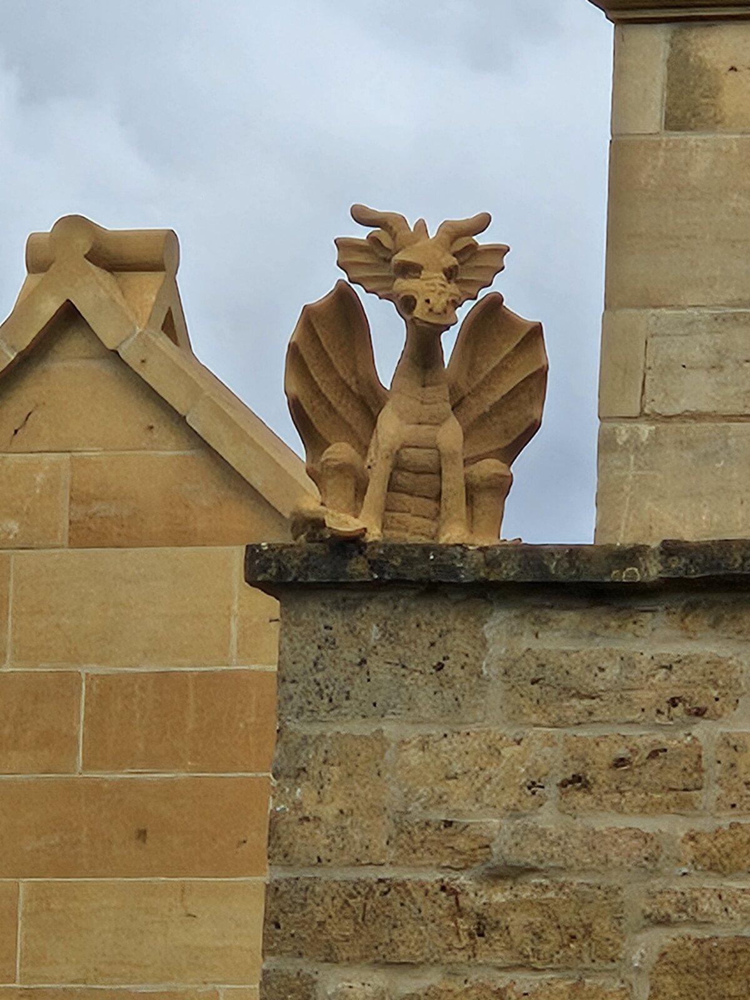
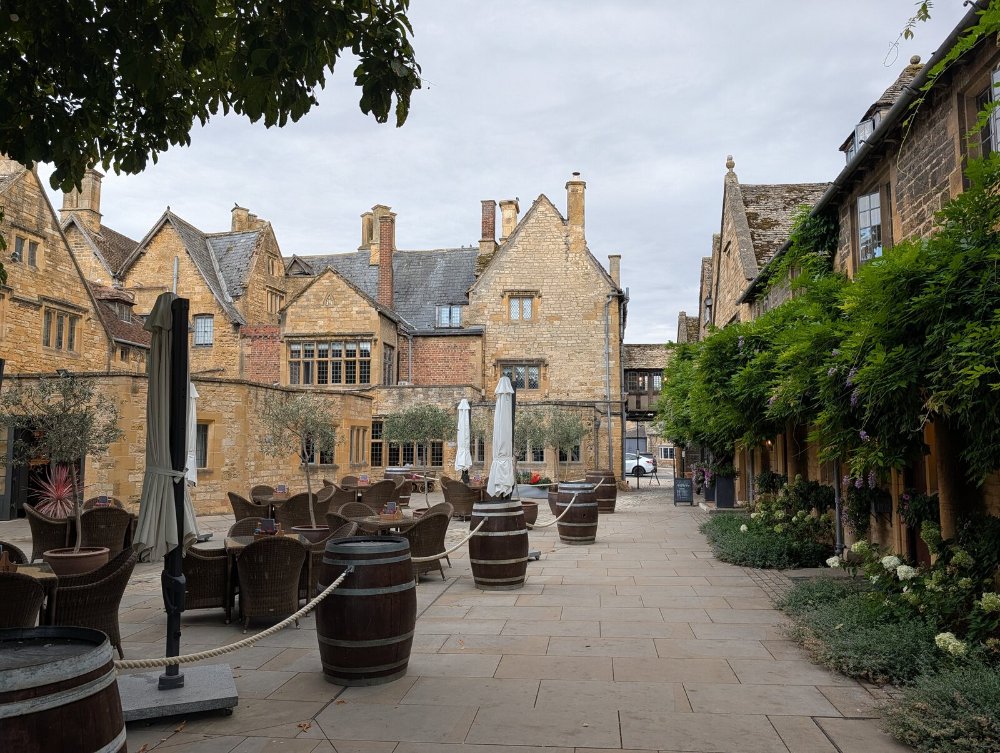
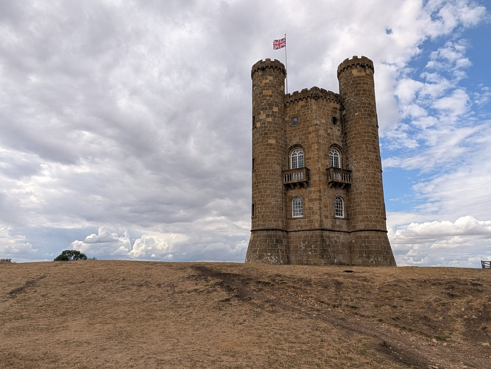
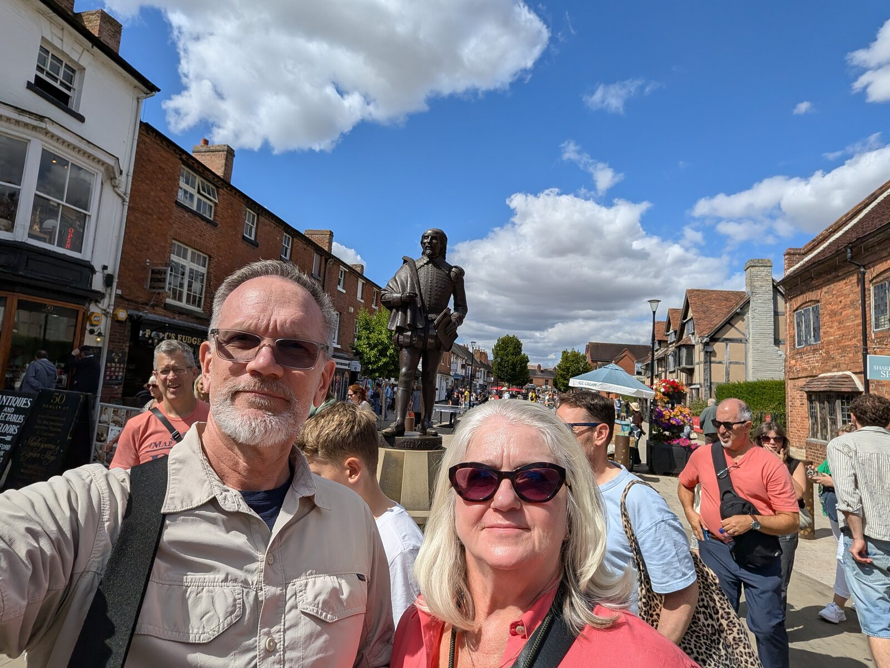
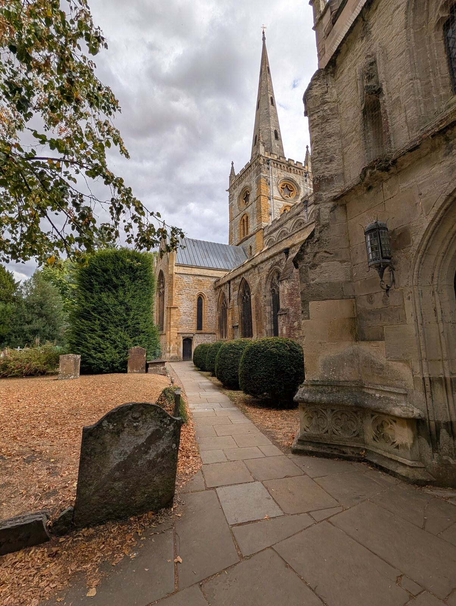
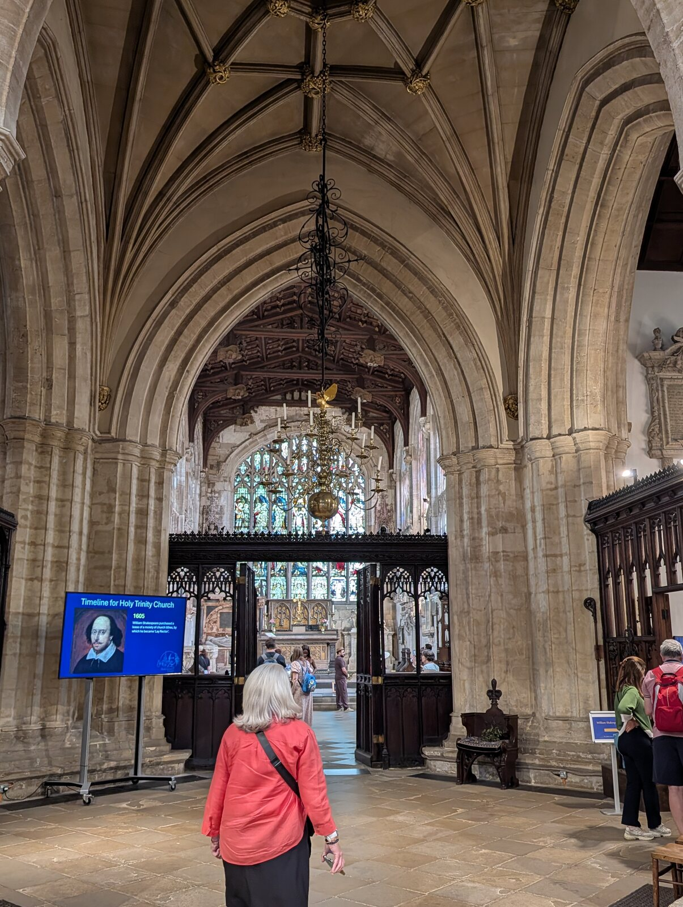
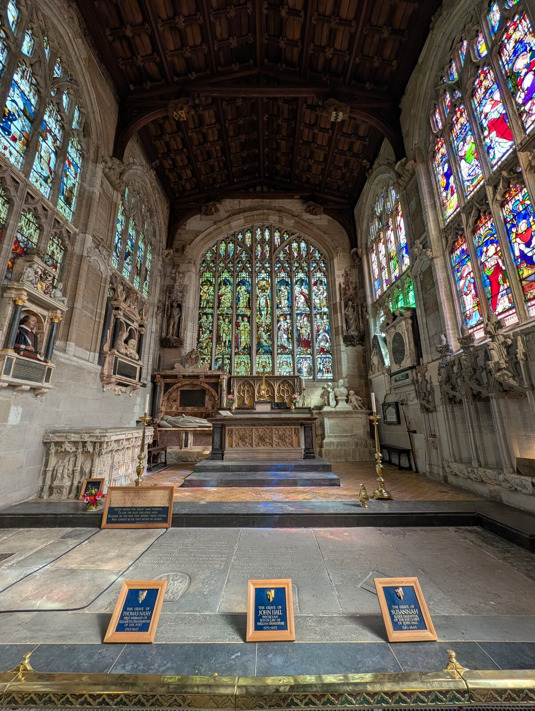
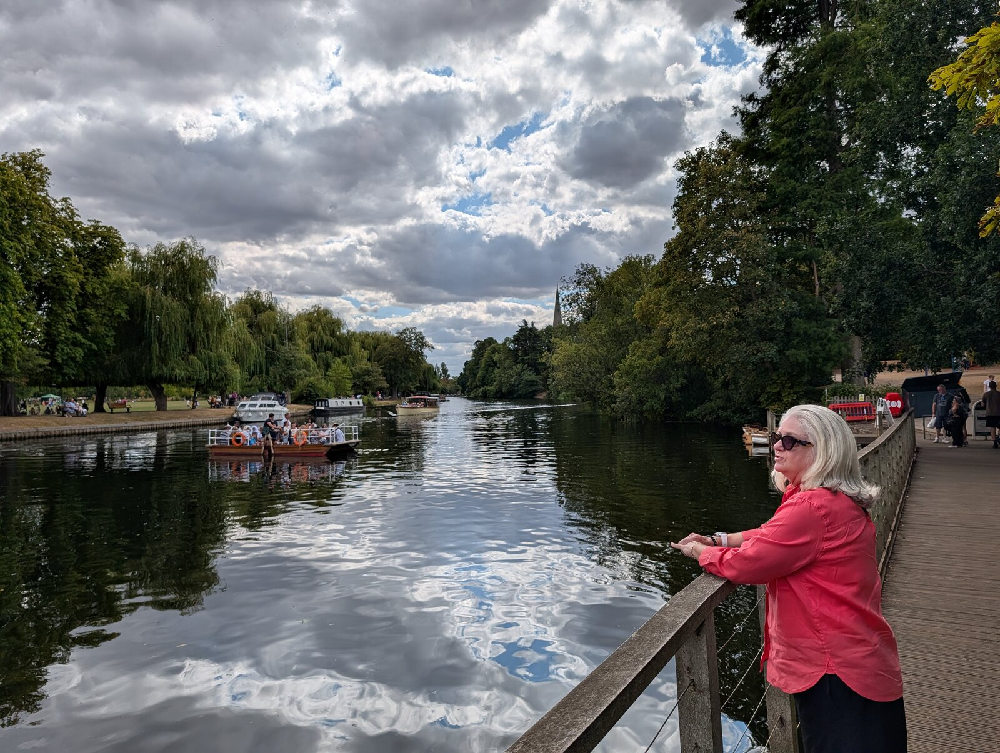
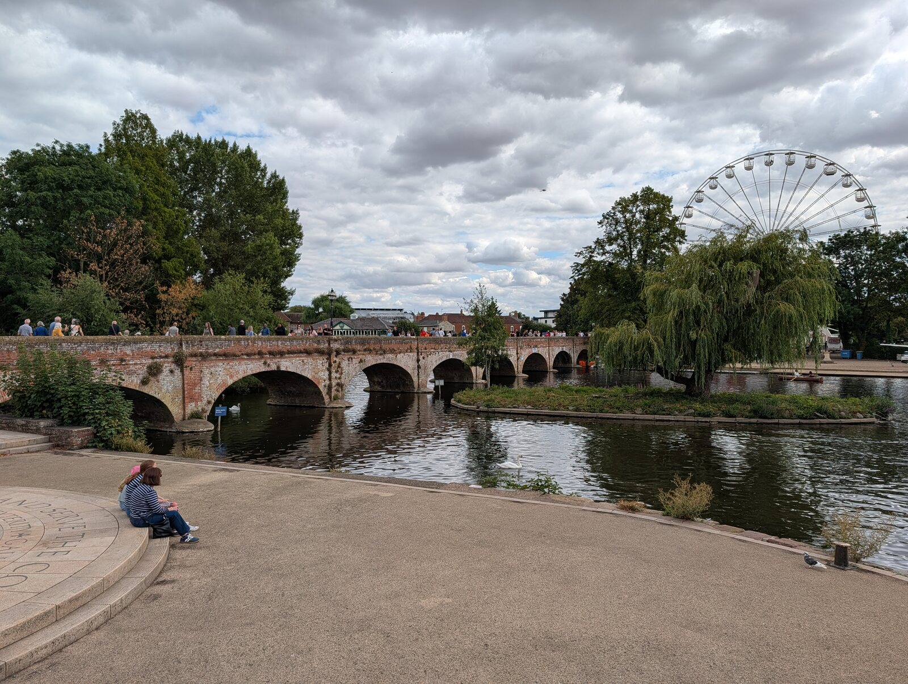

We left the Borealis in Southampton on August 20 and headed toward Broadway.
I had already decided I had no interest in driving in England.
That decision continued to look wise.
As we approached the Cotswolds, our driver navigated one-lane roads carrying two-way traffic.
Everywhere, apparently, has a Road to Hana.
The roads were narrow.
The countryside was beautiful.
And someone else was driving.
Perfect.
Broadway
We checked into the Lygon Arms and started walking around town.
Broadway looked almost suspiciously English—stone buildings, little shops, pubs and flowers everywhere.
At one shop, a mother was preparing to go inside with her toddler.
“Don’t touch anything,” she told her.
Shirley quietly said:
“Then why’d you bring me here?”
I thought “Ms. Shirley,” the Montessori director, might pull that mom aside for a conversation.
We kept walking.
I noticed an optometrist’s office and went inside to ask if someone could adjust my glasses.
They kindly did.
No appointment.
No complication.
Just another small problem solved while wandering around an English village.
Then we stopped for a burger and a pint.
I hadn’t had a burger in a while.
It was great.
At some point Shirley spotted a dragon on a rooftop.
She announced that our next house needed one.
She had already insisted on a lion door knocker.
I told her the house was becoming fairly eclectic.
That evening we ate at The Grill and shared a salad and braised short ribs.
After weeks of travel, Broadway immediately felt easy.
Walk around.
Look in shops.
Get my glasses fixed.
Have a burger and a pint.
Discuss architectural dragons.
A good first afternoon.
Shirley’s Birthday
The next day was Shirley’s birthday.
We celebrated by hiking the Cotswold Way to Broadway Tower.
The trail climbed through fields and open countryside above the village. It wasn’t a particularly dramatic expedition.
It was simply a walk through the English countryside.
And it was wonderful.
As we walked, I asked Shirley whether a day like this would have appealed to her years ago.
A leisurely breakfast.
A hike.
No major attraction to check off.
No schedule beyond dinner.
She thought that, years earlier, a relaxing day of doing relatively little might have felt like a waste of time.
It didn’t anymore.
We reached Broadway Tower, explored the grounds and looked out over the surrounding countryside.
Then we walked back.
That evening we returned to The Grill for Shirley’s birthday dinner. We shared a salad, a seven-ounce filet, mashed potatoes and sautéed summer vegetables.
Nothing elaborate.
Just a birthday in the Cotswolds.
A walk to a tower.
A good dinner.
And nowhere else we needed to be.
Stratford-upon-Avon
On Saturday we went to Stratford-upon-Avon.
It was busier and more touristy than Broadway.
We walked past Shakespeare’s birthplace and visited Holy Trinity Church, where he is buried.
After the church, we wandered along the River Avon and found somewhere to have a pint.
Then we sat along the river.
And the “I can’t believe this is my life” grin appeared again.
We had seen Shakespeare’s birthplace.
We had visited the church where he was buried.
But the moment I most wanted to remember was simply sitting with Shirley beside the River Avon.
An Ordinary Sunday
Our final day in Broadway was quiet.
We had a late breakfast.
Wandered through the shops.
Packed.
Shared a nice dinner.
Set an alarm for the following morning.
That was about it.
There was a time when we might have felt compelled to fill our last day with one more excursion.
Instead, we allowed Sunday to be Sunday.
By then we had been traveling for weeks.
We were getting better at understanding that being somewhere didn’t require us to be sightseeing every minute.
Sometimes being in Broadway meant hiking to Broadway Tower.
Sometimes it meant visiting Stratford-upon-Avon.
And sometimes it meant sleeping late, walking around town and getting ready to leave.
What We’ll Remember
We’ll remember the one-lane roads with two-way traffic—and being glad someone else was driving.
We’ll remember arriving at the Lygon Arms and immediately going for a walk.
We’ll remember Shirley hearing a mother tell her toddler not to touch anything and quietly asking:
“Then why’d you bring me here?”
We’ll remember an optometrist adjusting my glasses without an appointment.
We’ll remember the burger and pint that tasted particularly good after weeks without one.
We’ll remember Shirley deciding our next house needs both a dragon on the roof and a lion door knocker.
We’ll remember hiking the Cotswold Way to Broadway Tower on her birthday.
We’ll remember talking about how a quiet day that once might have seemed wasteful now felt pretty wonderful.
We’ll remember Shakespeare’s birthplace and Holy Trinity Church.
And we’ll remember sitting beside the River Avon when the “I can’t believe this is my life” grin appeared again.
Mostly, we’ll remember that Broadway gave us four uncomplicated days.
Walk.
Eat.
Hike.
Explore a little.
Relax.
Apparently that was plenty.
Would We Return?
Yes.
Broadway was comfortable, walkable and beautiful.
There were restaurants nearby, countryside outside the door and enough to explore without feeling that we needed an itinerary.
We could imagine returning for longer.
Maybe we’d walk more of the Cotswold Way.
Maybe we’d visit some of the nearby villages.
Maybe we’d simply stay at the Lygon Arms, have long breakfasts and go for walks.
And if we eventually build or buy another house, Shirley will apparently be looking for one with a lion door knocker and a dragon on the roof.
That may narrow the search.








